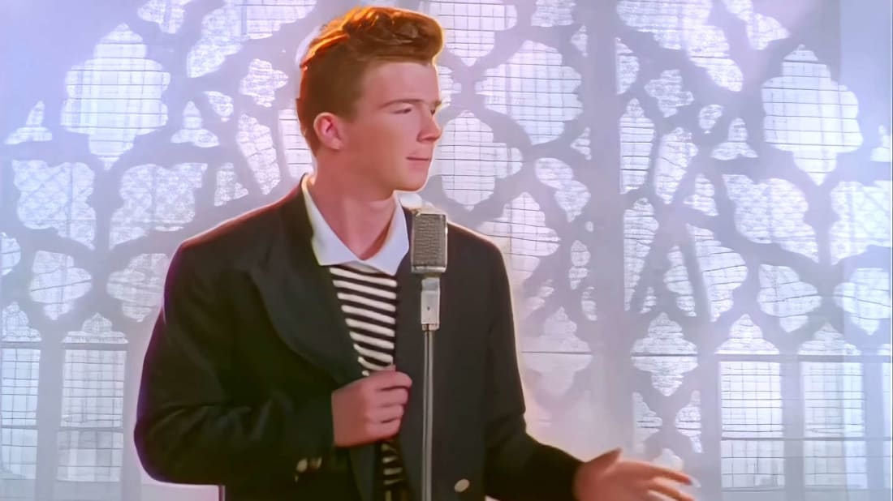

Origine des memes
Rick Roll

Origine du Rick Roll
Le Rick Roll est un meme Internet basé sur le clip de la chanson "Never Gonna Give You Up" de Rick Astley, sortie en 1987.
- Le meme est né sur le forum 4chan en 2007, en tant que blague similaire au "Duckrolling".
- Il est rapidement devenu un phénomène viral, utilisé pour piéger des amis, des collègues, voire des célébrités ou institutions.
Utilisation du Rick Roll
- Un utilisateur poste un lien apparemment utile ou intrigant, mais qui redirige vers la vidéo de Rick Astley.
- Il est souvent utilisé lors d'événements en ligne, dans les commentaires, ou même dans des conférences officielles comme un clin d’œil humoristique.
La Musique
La chanson emblématique qui accompagne ce meme est bien sûr "Never Gonna Give You Up" de Rick Astley :
Voici un exemple de vidéo faite sur ce meme :
Lien très important pour la suite de l'origine :
Suite du site !